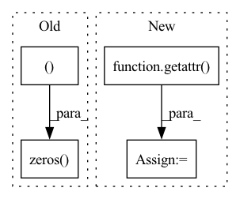

Pattern ID :6654
Before Change
return
getattr(self, PREDICTIONS).append(
torch.zeros( (self._n_tasks, 1 ), dtype=torch.double, device=self.device)
)
getattr(self, LABELS).append(
torch.zeros((self._n_tasks, 1), dtype=torch.double, device=self.device)
)After Change
)
def _init_states(self) -> None:
state = getattr( self, self._fused_name)
state = torch.zeros(
(len(self.state_names), self._n_tasks, 1),
dtype=torch.double,
device=self.device,In pattern: SUPERPATTERN
Frequency: 3
Non-data size: 4
Instances Fragment ID: 22976396
Project Name: facebookresearch/torchrec
Commit Name: df576fab294f27a11da2cc337c951b35210db8b4
Time: 2023-01-13
Author: renganxu@meta.com
File Name: torchrec/metrics/auc.py
M Class Name: AUCMetricComputation
N Class Name: AUCMetricComputation
M Method Name: _init_states(1)
N Method Name: _init_states(1)
M Parent Class: RecMetricComputation
N Parent Class: RecMetricComputation
M File Name: torchrec/metrics/auc.py
N File Name: torchrec/metrics/auc.py
M Start Line: 91
M End Line: 102
N Start Line: 77
N End Line: 92
Before Change
new_length = len(item_list_index)
new_data = self.dataset.inter_feat[target_index]
new_dict = {
self.item_list_field: torch.zeros( (new_length, self.max_item_list_len ), dtype=torch.int64) ,
self.time_list_field: torch.zeros((new_length, self.max_item_list_len)),
self.item_list_length_field: torch.tensor(item_list_length),
}After Change
for field in self.dataset.inter_feat:
if field != self.uid_field:
list_field = getattr( self, f"{field}_list_field")
list_len = self.dataset.field2seqlen[list_field]
shape = (new_length, list_len) if isinstance(list_len, int) else (new_length, ) + list_len
list_ftype = self.dataset.field2type[list_field]
dtype = torch.int64 if list_ftype in [FeatureType.TOKEN, FeatureType.TOKEN_SEQ] else torch.float64 Fragment ID: 22976394
Project Name: rucaibox/recbole
Commit Name: ff2c1876a9a57351382828ca1246646ee01aff42
Time: 2020-12-06
Author: 297086016@qq.com
File Name: recbole/data/dataloader/sequential_dataloader.py
M Class Name: SequentialDataLoader
N Class Name: SequentialDataLoader
M Method Name: augmentation(4)
N Method Name: augmentation(5)
M Parent Class: AbstractDataLoader
N Parent Class: AbstractDataLoader
M File Name: recbole/data/dataloader/sequential_dataloader.py
N File Name: recbole/data/dataloader/sequential_dataloader.py
M Start Line: 114
M End Line: 140
N Start Line: 126
N End Line: 145
Before Change
return
getattr(self, PREDICTIONS).append(
torch.zeros( (self._n_tasks, 1 ), dtype=torch.double, device=self.device)
)
getattr(self, LABELS).append(
torch.zeros((self._n_tasks, 1), dtype=torch.double, device=self.device)
)After Change
)
def _init_states(self) -> None:
state = getattr( self, self._fused_name)
state = torch.zeros(
(len(self.state_names), self._n_tasks, 1),
dtype=torch.double,
device=self.device, Fragment ID: 22976395
Project Name: facebookresearch/torchrec
Commit Name: 50c861a4debb6d0d8bd55ddb27452e89f2d19d51
Time: 2022-12-03
Author: renganxu@meta.com
File Name: torchrec/metrics/auc.py
M Class Name: AUCMetricComputation
N Class Name: AUCMetricComputation
M Method Name: _init_states(1)
N Method Name: _init_states(1)
M Parent Class: RecMetricComputation
N Parent Class: RecMetricComputation
M File Name: torchrec/metrics/auc.py
N File Name: torchrec/metrics/auc.py
M Start Line: 91
M End Line: 102
N Start Line: 77
N End Line: 92